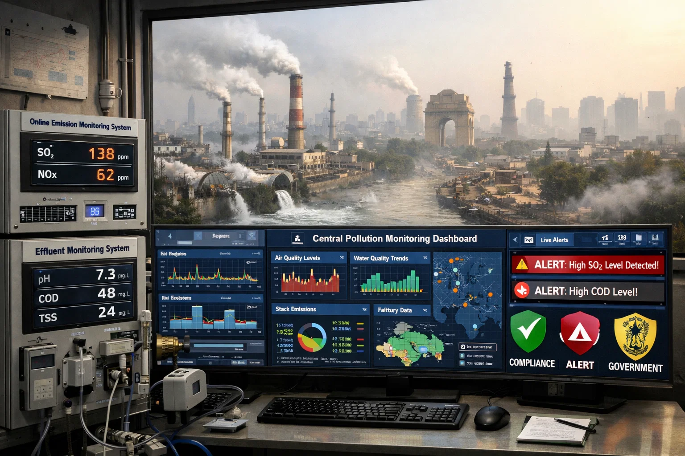

Why Online Monitoring Is Mandatory for Delhi Industries

With increasing pressure on Delhi’s water resources and strict enforcement by regulatory authorities, online water quality monitoring has become mandatory for many industries. Regulatory bodies require real-time, tamper-proof monitoring to ensure environmental protection and regulatory compliance.
This article explains why online monitoring is compulsory in Delhi, key regulatory drivers, and how Agua Instruments helps industries meet these requirements effectively.
1. Strict CPCB & DPCC Compliance Requirements
Industries classified under Red and Orange categories are required to install Online Continuous Effluent Monitoring Systems (OCEMS).
- Continuous monitoring of critical effluent parameters
- Real-time data access for regulatory authorities
- Zero tolerance for data gaps, tampering, or manual interference
Online monitoring systems are the only reliable and accepted way to meet these stringent compliance requirements.
2. Protection of the Yamuna River & Groundwater
Most drains in Delhi discharge directly or indirectly into the Yamuna River, making effective effluent control essential.
- Effluent discharge remains within permissible limits
- Immediate detection of violations and exceedances
- Reduced pollution load on rivers, drains, and groundwater
This plays a vital role in protecting Delhi’s water resources and public health.
3. Avoidance of Penalties & Legal Action
Failure to comply with regulatory norms can result in:
- Heavy environmental compensation and fines
- Disconnection of water and electricity supply
- Suspension or cancellation of Consent to Operate (CTO)
- Plant shutdown or closure notices
Installing an online monitoring system significantly reduces compliance risks and protects business continuity.
4. Improved STP & ETP Performance
Manual or periodic sampling often fails to capture sudden COD or BOD spikes, pH shocks, and flow variations.
- Immediate corrective action
- Optimized chemical dosing
- Stable and efficient STP & ETP operation
This results in better treatment performance and lower operating costs.
5. Transparency & Inspection Readiness
Inspections in Delhi increasingly rely on digital records and remote data access.
- Tamper-proof and time-stamped data logs
- Automated reports and trend analysis
- Quick access during audits and inspections
6. Support for Sustainability & ESG Goals
Online water quality monitoring helps organizations track environmental performance, strengthen ESG reporting, and demonstrate regulatory commitment.
Key Parameters Monitored Online in Delhi
- pH
- COD (Chemical Oxygen Demand)
- BOD (Biochemical Oxygen Demand)
- TSS (Total Suspended Solids)
- Flow
- Conductivity
- Oil & Grease
- Ammonical Nitrogen
Challenges Faced by Delhi Industries
- Limited space for analyzer installation
- Power and network reliability issues
- Frequent inspections and audits
- High expectations for data accuracy and uptime
How Agua Instruments Supports Delhi Industries
Agua Instruments delivers compliance-ready online water quality monitoring systems tailored to Delhi’s regulatory environment.
- Online COD & BOD analyzers
- pH, TSS, Flow & Conductivity sensors
- Multi-parameter water quality analyzers
- Online gas analyzers for emission monitoring
- Complete OCEMS integration
Why Choose Agua Instruments?
- Proven compliance expertise
- High-accuracy industrial-grade analyzers
- Reliable real-time data transmission
- End-to-end installation & commissioning
- Calibration, service, and AMC support
Conclusion
For industries operating in Delhi, online water quality monitoring systems are no longer optional. Real-time monitoring ensures compliance, protects water resources, and maintains uninterrupted operations.
Agua Instruments — Precision Monitoring. Regulatory Compliance. Sustainable Future.